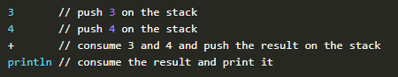
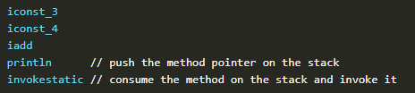
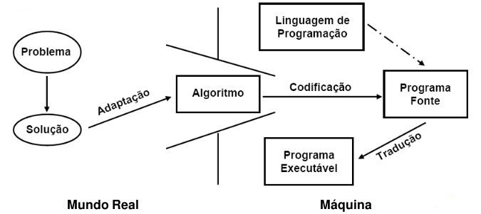

Iniciado em Junho de 1991 por James Gosling, Mike Sheridan e Patrick Naughton o projeto da linguagem Java foi desenvolvido, inicialmente, para a televisão interativa, e lançado em 1995 como um componente central da plataforma Java da Sun Microsystems.
O desenvolvimento de aplicações passar por um problema bastante incômodo para quem financia os projetos, pois para cada sistema diferente em que eles querem que seu produto esteja disponível era preciso lidar com especificidades de cada arquitetura.
Daí veio o Java, que é uma linguagem de programação orientada a objeto e projetada para permitir aos desenvolvedores programarem uma vez e terem seu programa executado em diversos dispositivos (o famoso "Write once, run anywhere").
A evolução da maior parte das tecnologias Java são feitas através de JSR (Java Specification Request), que são ideias debatidas por pessoas importantes da área cujo resultado pode ser conferido através do site https://www.jcp.org/ (Java Community Process).
A tecnologia Java é empregada em diversas empresas através de aplicações que precisam de velocidade, lidar com concorrência, robustez e produtividade.
Abaixo estão alguns exemplos:
Dentro dessas e de outras empresas é possível achar a tecnologia Java sendo usada desde aplicações web até automações e equipamentos hospitalares.
O código Java é compilado para bytecode que, por sua vez, é interpretado pela JVM. Quem deve se preocupar com a plataforma onde o código será executado, são os desenvolvedores da máquina virtual.
 Compilado é o nome que se dá ao código processado por um Compilador, que é um programa que "traduz" o código de uma linguagem de programação para linguagem de máquina ou para uma a ser interpretada.
A JVM é (Java Virtual Machine) é um programa que sabe interpretar e executar um programa Java (já em bytecode)
Parte da filosofia que trata das formas do pensamento em geral (dedução, indução, hipótese, inferência etc.) e das operações intelectuais que visam à determinação do que é verdadeiro ou não.
Organização e planejamento das instruções, assertivas etc. em um algoritmo, a fim de viabilizar a implantação de um programa.
É uma sequência de passos que visam atingir um objetivo bem definido.
IDE ou Integrated Development Environment (Ambiente de Desenvolvimento Integrado) é um programa feito para fazer outros programas. Este tipo de software provê uma série de ferramentas e facilidades para que os desenvolvedores possam ter foco em programar sua aplicação.
A que utilizaremos no curso se chama Eclipse. É uma das mais conhecidas ferramentas de desenvolvimento do ecossistema Java e é open-source e gratuita.
Variável é um contêiner que abriga um valor que pode ser usado dentro de um programa. Seu valor pode ser alterado conforme o andamento da aplicação.
Toda variável precisa ter um TIPO.
Exemplos de variáveis de um programa Java:
saldo;
cartaoDeCredito;
correntista;
Constante funciona quase como uma variável: ela pode conter um valor dentro do programa, mas ele é imutável.
Uma vez definido seu valor, este não poderá mudar!
Exemplos de constantes de um programa Java:
DATA_DE_MATRICULA;
CURSO;
CODIGO_DE_ACESSO;
/